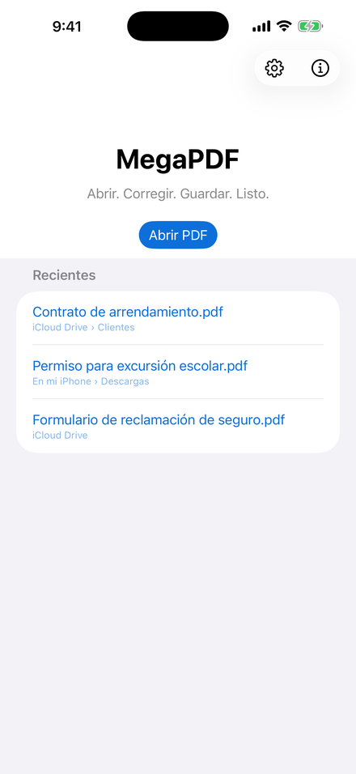
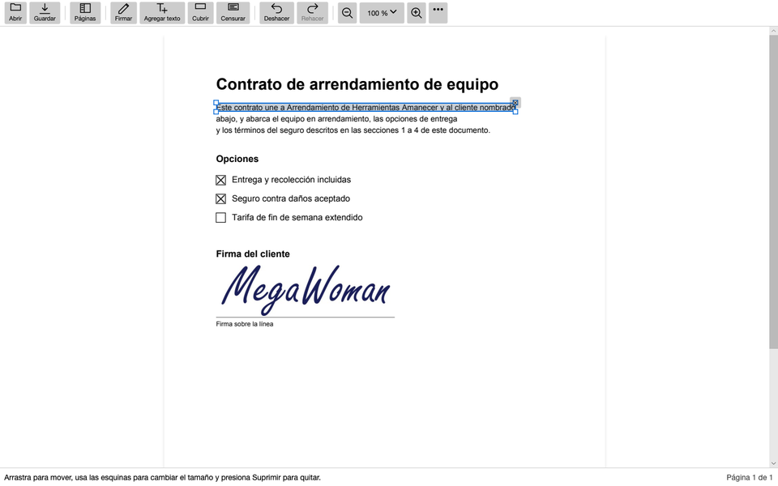
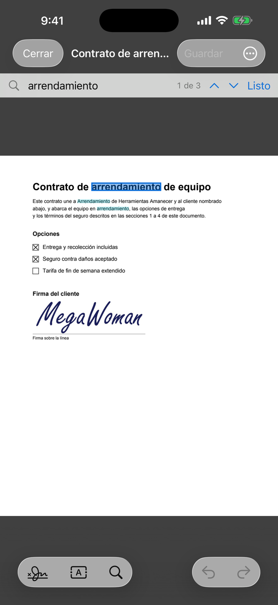
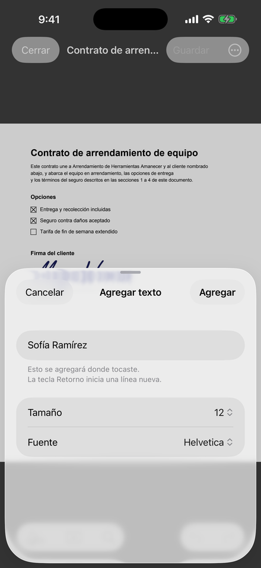
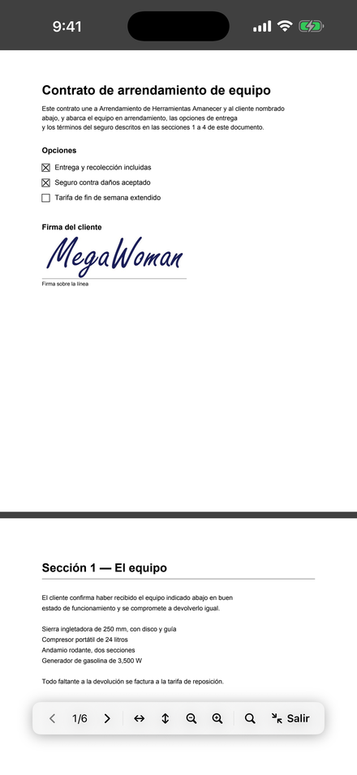
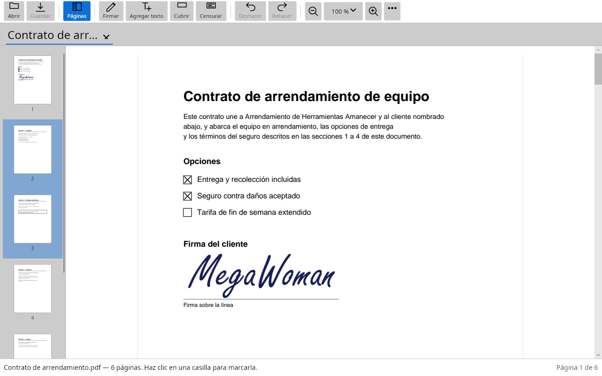
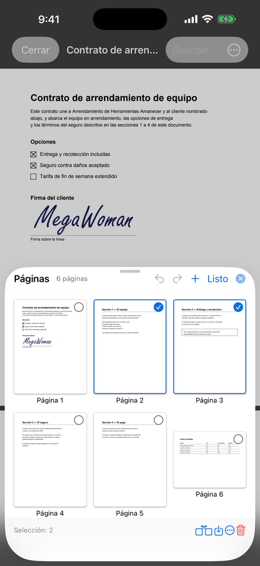
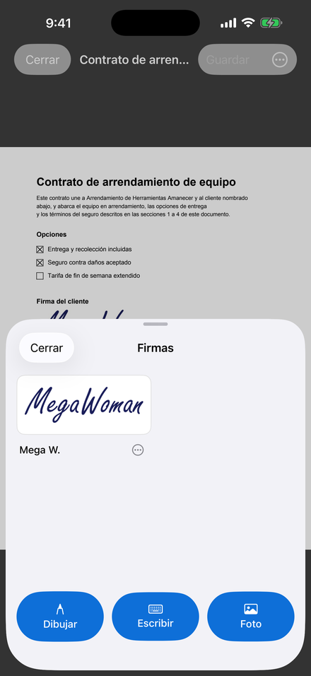
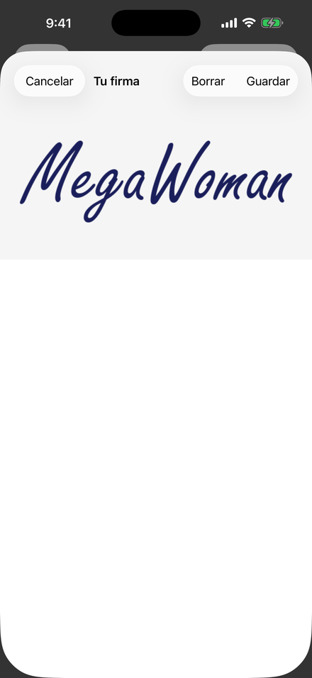

Ábrelo
Desde el correo en que llegó, desde Archivos, desde una hoja de compartir o con doble clic en tu equipo. MegaPDF lo abre ahí donde está.
Marca las casillas, escribe en las líneas, agrega tu firma y devuélvelo, desde tu teléfono o desde tu equipo. Tu documento nunca sale de tu dispositivo, y no tienes que registrarte en nada.


Nada que subir, ninguna cuenta, nada que aprender. Abre el PDF como abres cualquier otro archivo y ya está listo para llenarse.

Desde el correo en que llegó, desde Archivos, desde una hoja de compartir o con doble clic en tu equipo. MegaPDF lo abre ahí donde está.

Marca cualquier casilla, incluso un simple cuadrado impreso. Escribe en cualquier línea, con un tamaño y una fuente que combinen con el formulario. Después agrega tu firma: dibújala, escríbela o usa una foto de la que tienes en papel.

Guárdalo y compártelo desde tu teléfono, o adjúntalo desde tu equipo. ¿Pesa demasiado para un correo? Reducir para correo electrónico hace una copia más pequeña, y te dice con franqueza cuando no se puede.
Un contrato de arrendamiento, una declaración de impuestos, un expediente médico: los PDF que hay que firmar son justamente los que menos querrías subir al servidor de un desconocido. MegaPDF hace todo en tu propio dispositivo.
| Una herramienta PDF en línea típica | MegaPDF | |
|---|---|---|
| Adónde va tu documento | Se sube a su servidor | Se queda en tu dispositivo |
| Cuenta | Muchas veces obligatoria | Ninguna, nunca |
| Precio | Gratis con límites, después una suscripción | Gratis, nada que comprar |
| Sin internet | No funciona | Funciona igual |
| ¿Puedes comprobar lo que hace? | Pocas veces | Sí: el código es abierto |
Casi siempre es llenar y firmar. Para los otros días, todo está ahí, en cada plataforma.
¿Una fecha equivocada o un nombre mal escrito? Haz clic en la línea y vuelve a escribirla. MegaPDF conserva la fuente del documento cuando puede, y Deshacer devuelve el original tal como estaba.
Lo que marcas se quita del archivo: ninguna otra aplicación puede copiarlo ni buscarlo. El corrector también está, y dice claramente que solo cubre.
Crea una copia más pequeña que quepa como archivo adjunto. Tu original queda igual, y si la copia no va a quedar más pequeña, MegaPDF te lo dice.
Busca en todo el documento mientras escribes, incluidas las páginas escaneadas, que se leen en tu dispositivo (en todas partes menos en Linux).
Gira una página escaneada de lado, elimina una, cambia el orden arrastrándolas, inserta páginas de otro PDF o guarda las páginas que elegiste en su propio archivo.
Un toque oculta las barras de herramientas y deja solo la página, en Normal, en Sepia para una lectura larga o en Noche para un cuarto oscuro.
En Windows, Mac y Linux, cada PDF se abre en una pestaña de la misma ventana, con su propio deshacer, su búsqueda y su zoom.
Abre uno con su contraseña, respeta las restricciones que pidió su autor, o define, cambia y quita una contraseña por tu cuenta.
Un PDF de 2.5 GB se abre de inmediato, sin usar gigabytes de memoria. Las páginas de gran formato se miden a su tamaño real.
Cada guardado se comprueba antes de reemplazar tu original, así que un error al escribir nunca puede arruinar el archivo que te mandaron.
Exporta el texto del documento con sus títulos, sus listas y los valores que
ingresaste. En un equipo, megapdf-cli hace lo mismo desde una
terminal.
Español (para Latinoamérica y para España), inglés y francés, según el idioma de tu dispositivo.
Nada de maquetas: cada imagen es MegaPDF tal como lo vas a tener.




Una sola aplicación en seis plataformas, en la tienda de cada una. Un documento que firmas en una se abre exactamente igual en todas las demás.
Sí. Sin anuncios, sin suscripción, sin versión de pago y nada que comprar dentro de la aplicación. MegaPDF es libre y de código abierto, con licencia Apache 2.0, y lo hace Electric RV.
No. MegaPDF coloca una firma electrónica: la que dibujas, escribes o fotografías, puesta en la página donde corresponde. Una firma digital es otra cosa, respaldada por un certificado, y MegaPDF no crea firmas de ese tipo. Si un documento ya tiene una, MegaPDF te lo dice. Si no sabes qué tipo de firma pide un formulario, pregúntale a quien te lo mandó.
No. Funciona igual en modo avión, porque nunca se conecta a ninguna parte. Tus documentos y tus firmas se quedan en tu dispositivo.
Sí. MegaPDF guarda un PDF común y corriente, que se abre en cualquier lector de PDF. Tus marcas, tu texto y tu firma quedan guardados en el archivo mismo, así que verá exactamente lo que hiciste.
En español (para Latinoamérica y para España), inglés y francés. Sigue el idioma de tu dispositivo.
La página de soporte (en inglés) responde lo que más se pregunta y te ayuda a escribirnos sobre todo lo demás. Una sola persona lee esos mensajes, y nada de lo que escribas en esa página se envía hasta que tú lo envíes.
Gratis en Windows, Mac, iPhone, iPad, Android y Linux.
Consigue MegaPDF